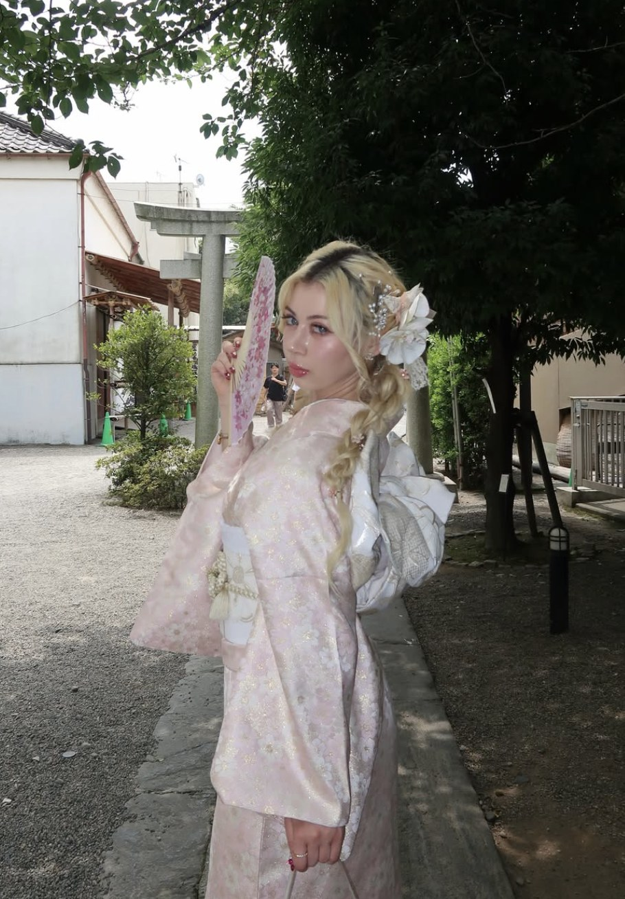
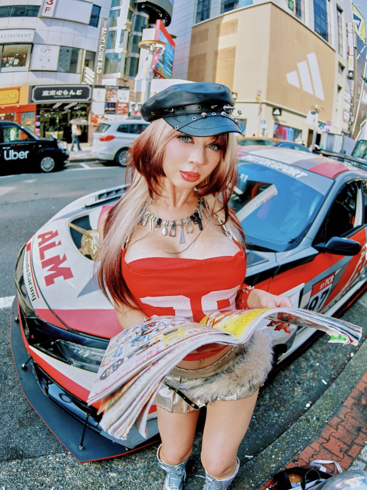
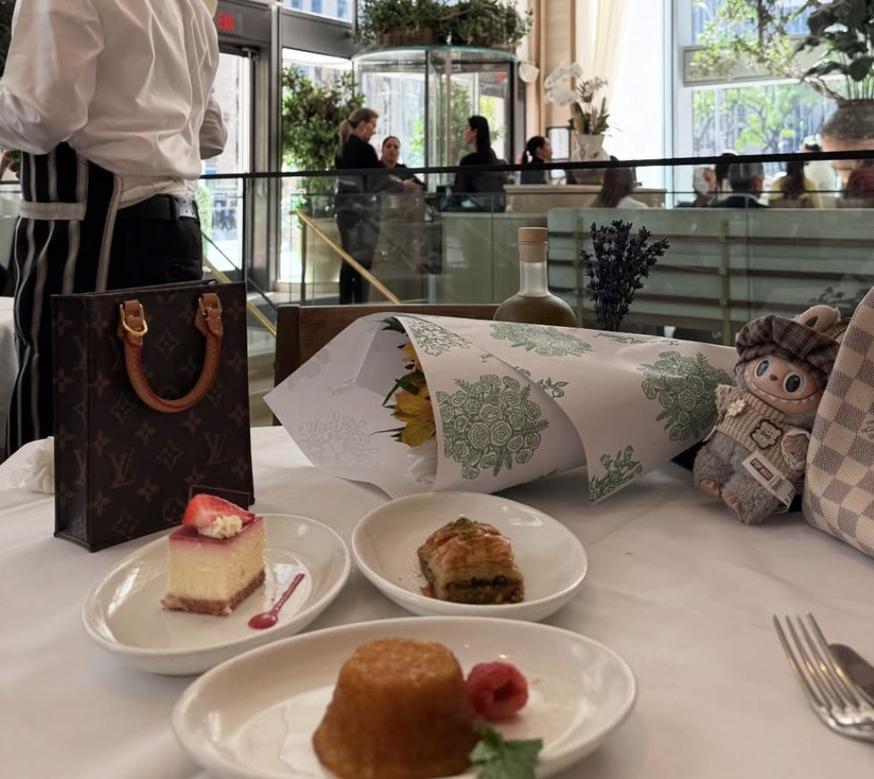
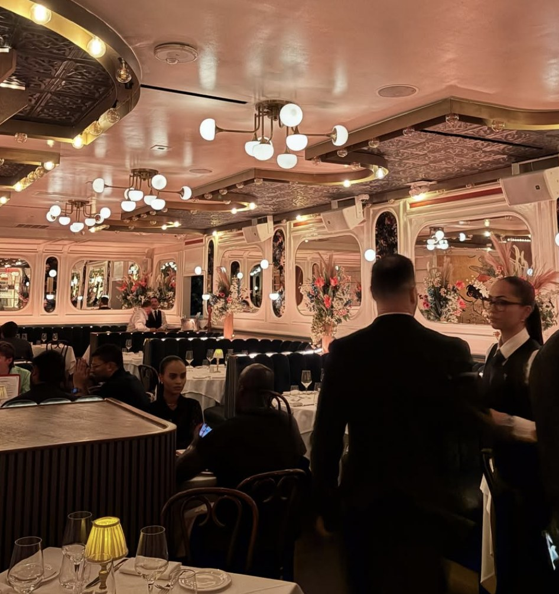
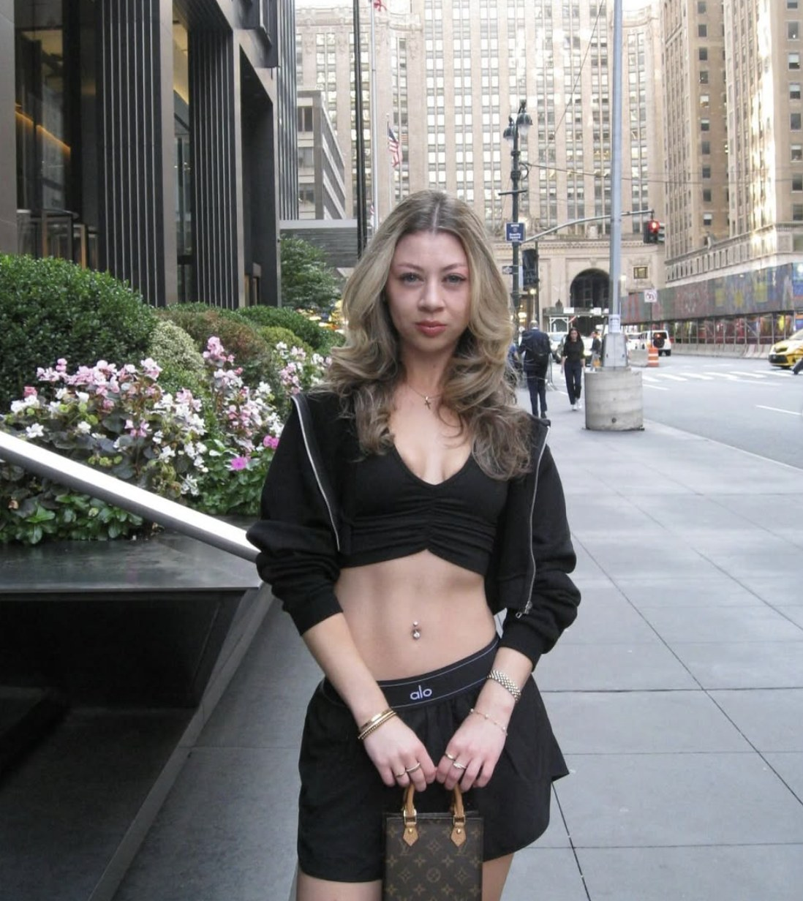

Jackie builds content the way brands wish they could brief it: on-trend, camera-ready, and grounded in what actually performs. Three-plus years across influencer relations, community management, and content strategy for beauty, fashion, and lifestyle brands — then the same instincts turned outward, into a personal body of UGC work shot across a dozen cities.





Every shoot doubles as a mini campaign — outfit, location, and lighting chosen the way a brand would choose them, then delivered as photos, reels, and stories that slot straight into a content calendar. It's the same instinct that ran community engagement and influencer coordination at Base Beauty, applied to a camera instead of a spreadsheet.
"Skilled at combining creativity and data-driven insights to build strong relationships and drive results."
— from Jackie's professional summary